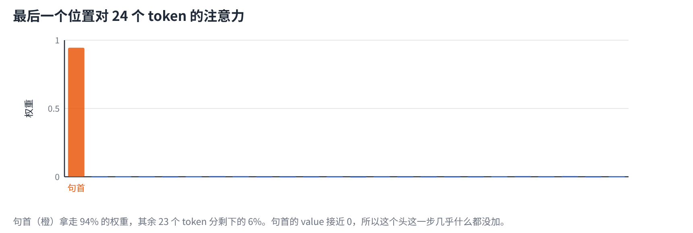
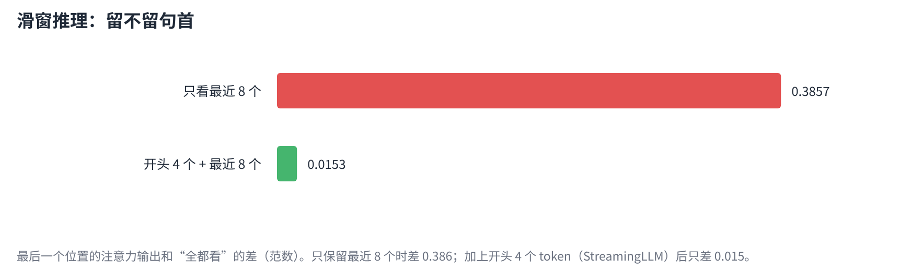
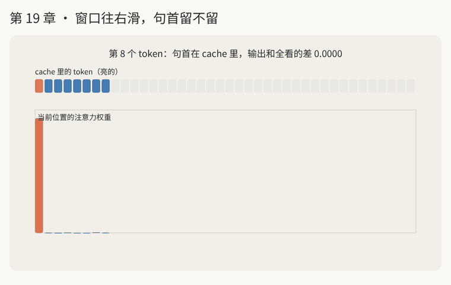

第 19 章 · 巨大激活与 attention sink：为什么大家都盯着第一个词
本地运行
git clone https://github.com/wikieden/beyond-transformer
cd beyond-transformer/code/notebooks
pip install jupyterlab torch numpy
jupyter lab ch19_attention_sink.ipynb也可以下载后直接用 VS Code 打开 .ipynb 运行。需要 GPU 的章节在 Colab 里选「代码执行程序 → 更改运行时类型 → GPU」。
本章回答：把大模型的注意力图画出来，常常看到第一列特别亮：不管当前是哪个词，都把一大半权重给了句首的那个 token，可它明明没什么意义。这是为什么？少数几个维度上大到离谱的激活值（巨大激活）和它有什么关系？推理时用滑动窗口把开头的词丢掉，模型为什么会直接崩？StreamingLLM 只留住开头 4 个词就修好了，原理是什么？
讲解日期：2026-11-26 · 上一章：第 18 章 训练稳定性 · 下一章：第 20 章 μP 与 DeepNorm
对应原文：Massive Activations in Large Language Modelstransformer-deep-dive/materials/text/papers/massive-activations-2402.17762.txtFigure 1 与摘要 L33–L47（LLaMA2-7B 的第 1415、2533 维；巨大激活比其余大上万倍，像固定的偏置项，导致注意力集中到对应 token）、L79–L90（“隐式的偏置项”）；StreamingLLMllm-full-stack/materials/text/papers/streamingllm-2309.17453.txtL108–L130（滑窗注意力为什么失败；softmax 必须加到 1；初始 token 几乎被所有后续 token 看见；保留 4 个初始 token）
本章缩写：massive activation（巨大激活：少数维度上比其余大几千到几万倍的激活值）；attention sink（注意力汇点：吸收“多余”注意力权重的 token）；StreamingLLM（流式 LLM：只保留开头几个 token + 最近窗口的推理方法）；KV cache（键值缓存，第 22 章）；W = 窗口大小。全部缩写见 附录 · 缩写与术语表
讲解
第一步：巨大激活：少数维度大得离谱（2026-11-26）
Sun 等人（Figure 1，L33–L38）在 LLaMA2-7B 里发现：残差流里有两个固定的维度（第 1415 和 2533 维），在两类 token（句首 token，和第一个句号或换行）上的值比其余激活大上万倍（摘要说“比如 100,000 倍”，L42）。
数字演示（玩具：6 个 token × 64 维，给第 0 个 token 的两维放上巨大值）：最大的 |值| 900，中位数 0.681，相差 1,322 倍，而且只出现在一个 token 的两个维度上。
几个特点（L42–L47、L79–L90）：
- 和输入几乎无关：换什么句子，这几个值都差不多；
- 像偏置项：它们的作用相当于网络里一个固定的 bias；把它们置零，模型效果大幅下降，置成平均值则几乎没影响；
- 引起注意力集中：带巨大激活的 token，经过 LayerNorm 后几乎只剩那一两个方向，和各种 query 都能对上，于是吸走大量注意力。
一句话：大模型的残差流里，少数固定维度在句首等少数 token 上大得离谱，作用像一个固定的偏置，并把注意力吸到这些 token 上。
第二步：attention sink：softmax 必须加起来是 1（2026-11-26）
类比：会议上必须把 100 分的票全部投出去。 有时候这一轮根本没有值得投的人，可规则规定票必须投完，大家就约定都投给一个“弃权箱”。句首 token 就是这个弃权箱。
StreamingLLM（L116–L127）给出的解释：
- softmax 的权重必须加起来是 1，即使当前 query 和前面哪个 token 都不太相关，权重也必须分出去；
- 句首 token 对后面所有位置都可见（因果 mask），训练时最容易被学成“放多余权重的地方”；
- 它的 value 学成很小（接近 0），所以权重放在它身上等于“什么都不加”：这就是一个“空操作”的头。
数字演示（24 个 token，最后一个位置的注意力；句首分数高、value 接近 0，其余分数小、value 随机）：句首拿到 0.9447 的权重，注意力的输出范数只有 0.0243：这个头这一步几乎什么都没做，正是它想要的。

图 19-1 · 最后一个位置对 24 个 token 的注意力权重。句首（橙）拿走 94%，其余 23 个分剩下的 6%一句话：softmax 的权重必须分完，没东西可看的头就把权重停在句首 token 上（它的 value 近似 0），句首 token 成了 attention sink。
第三步：滑窗推理为什么崩，StreamingLLM 怎么修（2026-11-26）
滑动窗口推理（L108–L115）：生成很长的文本时，KV cache 只保留最近 W 个 token，最早的丢掉，显存就不会一直涨。直觉上只是“看不到很远的东西”，可实际上文本一超过窗口、句首被丢掉，困惑度就暴涨。
原因：句首被丢掉后，原来停在它身上的 94% 权重没地方去，softmax 被迫把它们分给窗口里的其他 token。这些 token 的 value 是真实内容，于是“空操作”的头突然往残差流里加了一大堆东西，后面的层全乱了。
StreamingLLM（L127–L130）：保留开头 4 个 token的 KV，再加最近的 W 个，就够了。
数字演示（窗口 W = 8，比较最后一个位置的注意力输出和“全都看”的差别）：
| 做法 | 和全看的输出差 |
|---|---|
| 只看最近 8 个（句首被踢掉） | 0.3857 |
| 开头 4 个 + 最近 8 个 | 0.0153 |
留住句首，差别缩小到原来的 1/25。StreamingLLM 用这个办法让模型流式处理上百万 token 而不崩；它还建议预训练时专门放一个“占位 token”当 sink（摘要 L38）。后来的模型也有直接在注意力里加可学的“sink 偏置”或“softmax 分母加 1”的做法，让模型不用借句首 token 也能“弃权”。

图 19-2 · 三种做法下，最后一个位置的注意力输出和“全都看”的差（范数）。只保留最近 8 个时差得最多；加上开头 4 个 token 后几乎回到原样场景代码：用 Hugging Face 的 SinkCache 做流式生成（真实库调用，transformers 4.x 提供的缓存类；本书 chapter-code 只用 NumPy，这段没跑过）：
from transformers import SinkCache
cache = SinkCache(window_length=1024, num_sink_tokens=4) # 留住开头 4 个 + 最近 1020 个
out = model.generate(**inputs, past_key_values=cache, max_new_tokens=100_000)
在自己训练的小模型里画注意力图、看第一列是不是特别亮，是里程碑 T-M2 的一部分。
一句话：滑窗推理丢掉句首，原来停在 sink 上的权重被迫分给真实内容，输出就乱了；StreamingLLM 永远留住开头 4 个 token 的 KV。
动画演示：窗口往右滑，句首留不留

可交互版：animations/19-attention-sink.html（滑块：当前生成到第几个 token；勾选框：保留开头 4 个 token）。
怎么看：
- 一排是已经生成的 token，亮的是还在 KV cache 里的（窗口 8 个）；
- 柱子是当前位置的注意力权重；不保留开头时，句首一滑出窗口，权重就摊到别的 token 上（第三步）；
- 勾上“保留开头 4 个”：句首一直在，大部分权重一直停在它身上，右上角的输出差保持很小。
练习与作答记录
题 1（第二步）：句首分数 6、其余 3 个 token 分数都是 0。句首拿到多少权重？（提示：e⁶ ≈ 403.4）
题 2（第三步）：有人把 softmax 的分母改成 1 + Σe^{s_j}（相当于多了一个分数为 0、value 为 0 的隐形 token）。用自己的话说，为什么这样模型就不需要借句首 token 当 sink 了？
题 3（第三步）：KV cache 窗口 1024、保留 4 个 sink、生成到第 100,000 个 token 时，cache 里一共存了多少个 token 的 K、V？和不做任何截断相比省了多少倍？
口诀
两个维度大上万倍，像固定偏置，句首、句号最常见。
票必须投完，没人可投就投弃权箱：句首 value 近零，权重停那里就是空操作。
滑窗踢掉句首，多余的票摊给真内容，输出全乱；留住开头四个，就稳了。
本章复习卡片
必背：B50（巨大激活、attention sink 的成因、滑窗为什么崩、StreamingLLM）。练习做完后，按答错、卡住的地方再补。
附录 · 延伸阅读
留给以后深入学习用，不影响本章主线。★ 是建议先读的。
推荐阅读
| 读什么 | 读哪里 | 读它为了什么 |
|---|---|---|
| ★ Efficient Streaming Language Models with Attention Sinks（Xiao 等 2024） | L98–L130；§3 | attention sink 的发现和 StreamingLLM |
| ★ Massive Activations in Large Language Models（Sun 等 2024） | Figure 1、摘要 L33–L47；L79–L90 | 巨大激活与“隐式偏置” |
| 本书 第 34 章（滑窗推理与 sink） | 全部 | 长序列推理的工程做法 |
| Evan Miller，“Attention Is Off By One”（在线博客） | 全文 | softmax 分母加 1 的想法 |
数学原理
- softmax 必须加到 1：Σ_j α_j = 1，没有“全部不看”的选项；要做空操作只能把权重放在 value ≈ 0 的位置上。
- 因果可见性：位置 0 被所有 n 个 query 看见，位置 j 只被 n − j 个 query 看见，所以位置 0 的“被训练次数”最多。
- 滑窗的重归一化：踢掉权重为 w₀ 的 token，其余权重都除以 1 − w₀；w₀ 接近 1 时，其余权重被放大几十倍。
公式清单
| 公式 | 意思 |
|---|---|
| \(\sum_j\alpha_j = 1\) | softmax 的约束 |
| \(\alpha_j' = \alpha_j/(1 - \alpha_0)\) | 踢掉位置 0 后的权重 |
| 保留集合 = 开头 4 个 ∪ 最近 W 个 | StreamingLLM |
代码对照：把本章的数字用代码算一遍
NumPy。代码在仓库本地
beyond-transformer/solutions/chapter-code/ch19_attention_sink.py，配套测试tests/test_ch19.py，notebook 在notebooks/ch19_attention_sink.ipynb：
bash cd beyond-transformer/solutions/chapter-code uv run python ch19_attention_sink.py uv run pytest tests/test_ch19.py
讲义 ↔ 代码：
| 讲义 | 公式 | 写法 | 跑出来 |
|---|---|---|---|
| 第一步 巨大激活 | 最大 / 中位数 | massive() |
相差 1,322 倍 |
| 第二步 sink | 句首的权重 | compare()["sink 拿到的权重"] |
0.9447 |
| 第三步 滑窗 vs StreamingLLM | 输出差 | compare() |
0.3857 vs 0.0153 |
关键几行：
scores[0] = 6.0; values[0] = 0.02 * values[0] # 句首：分数高、value 近零
_, win = attend(s, v, np.arange(N - W, N)) # 只看最近 W 个
keep = np.r_[np.arange(n_sink), np.arange(N - W, N)] # 开头 n_sink 个 + 最近 W 个
代码里才看得到的 2 件事：
- sink 的分数和 value 都是手写的：真实模型里它们是训练出来的，靠的就是第一步那种巨大激活。
- 位置编号要保持一致：StreamingLLM 实际实现里，cache 里 token 的位置是按“在 cache 里的位置”重新编号的，而不是原文里的绝对位置，否则 RoPE 的相对距离会超出训练范围（第 17 章）；这里的玩具没有位置编码，看不到这一点。
自己改一改（不影响练习答案）：
- 把
n_sink改成 1 和 8，输出差怎么变？ - 把句首的分数从 6 降到 2，滑窗踢掉句首时还会差那么多吗？